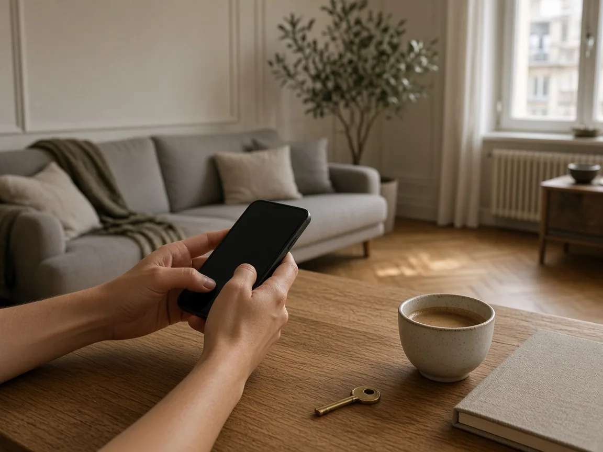
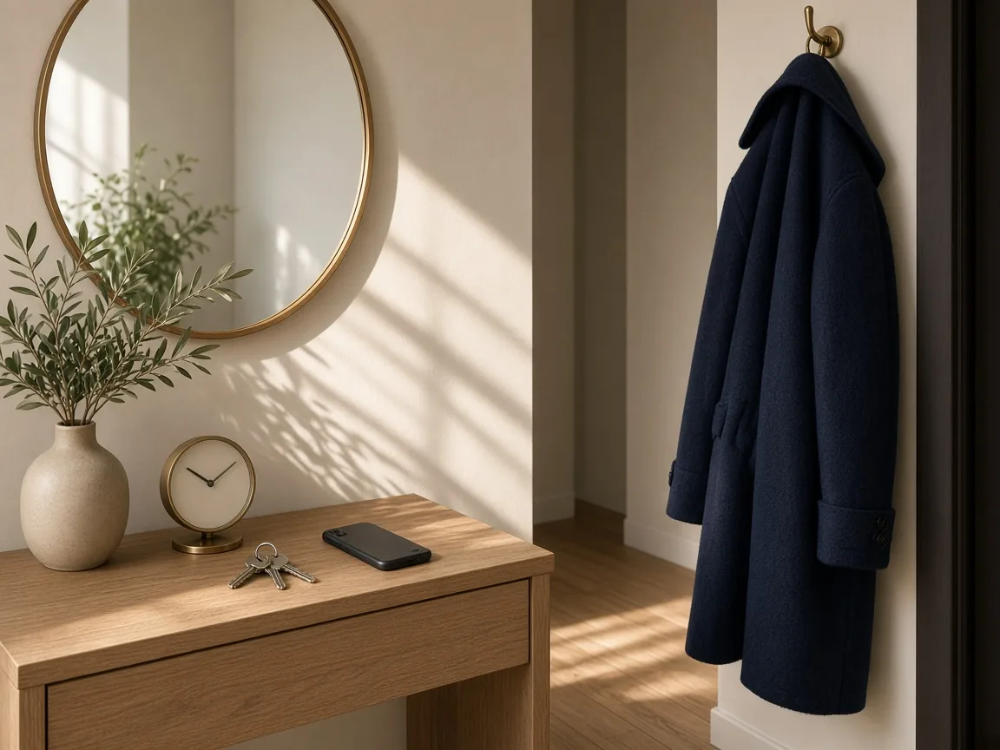
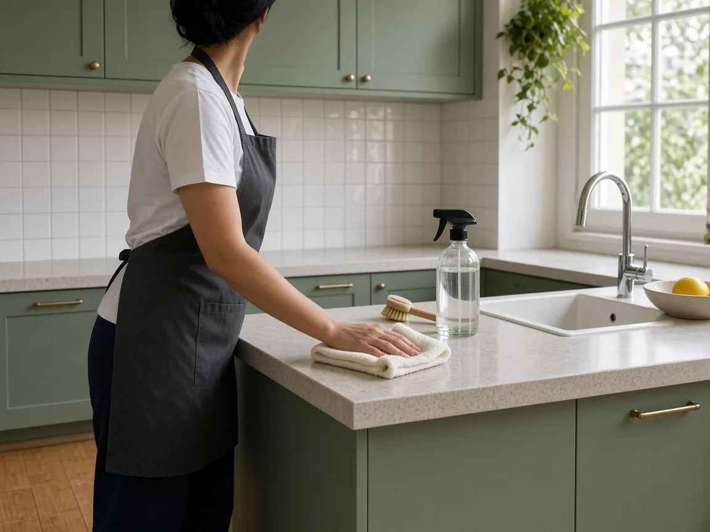

Od upita do čistog doma
Tri jednostavna koraka
Ne treba vam spisak prostorija ni stručan naziv usluge. Opišete stan, mi potvrdimo termin i cenu, pa dolazimo i čistimo dogovoreni obim.

Stavka 1
Izaberite uslugu
Vi pošaljete upit. Dovoljno je da kažete vrstu čišćenja, približnu kvadraturu i šta vam je najvažnije.
- Redovno održavanje, generalno čišćenje, prostor posle renoviranja, useljenje ili pranje prozora.
- Približna kvadratura stana ili kuće, bez spiska svake prostorije.
- Jedna rečenica prioriteta: rerna, prašina posle radova ili prozori.

Stavka 2
Dogovorite termin
Javimo se pre dolaska, sa predlogom vremena i cenom. Sve što menja obim ulazi u taj razgovor.
- Predlažemo termin prema vašem rasporedu i potvrđujemo ga.
- Cena je poznata pre nego što čišćenje počne.
- Frižider, osetljive površine, ljubimac i željena sredstva dogovaramo unapred.

Stavka 3
Mi čistimo
Dolazimo u dogovoreno vreme i radimo tačno dogovoreni obim. Vi obezbedite pristup i kratko uputstvo.
- Ulazak u stan u vreme koje je već potvrđeno.
- Kratko uputstvo šta ne dirati i gde ne ulazimo.
- Ne morate da budete kod kuće ceo dan niti da subotu provedete u rukavicama.

Tog dana
Šta treba vama, i šta treba nama
Termin je potvrđen, cena je poznata, a stan nas čeka. Od vas nam treba pristup i par rečenica koje čišćenje usmeravaju. Od nas dobijate dogovoreni obim, bez da subota ode na brisanje.
Pristup u dogovoreno vreme
Možete biti kod kuće ili nam ostaviti ključ po dogovoru. Bitno je da možemo da uđemo kad smo rekli da dolazimo.
Šta ne dirati
Osetljive površine, soba u koju ne ulazimo ili predmeti koje ne pomeramo — recite to unapred, pa ne ostaje nagađanju.
Ljubimci i sredstva
Ako u stanu ima životinja ili želite određena sredstva, to je deo istog razgovora kao kvadratura i termin.